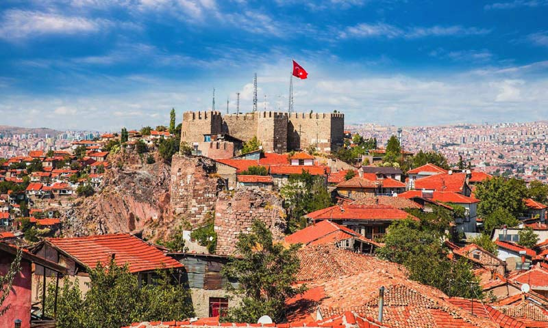
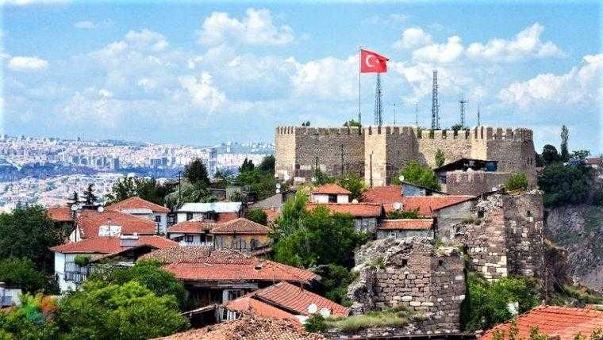
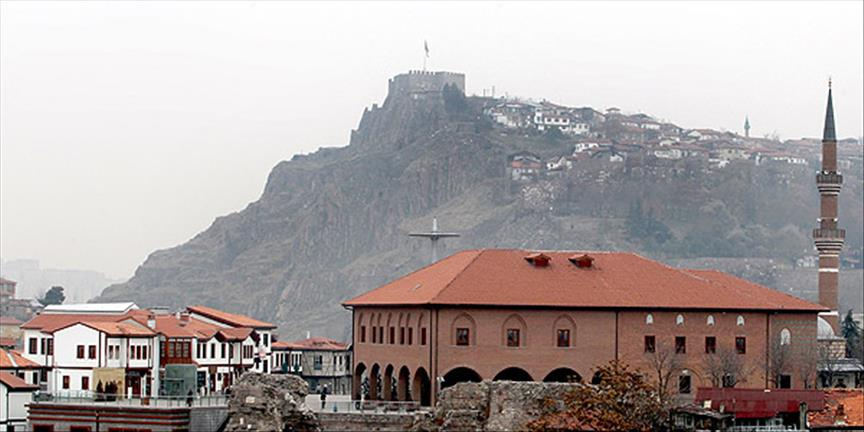

Ankara Kalesi
Ankara Kalesi, Ankara'nın Altındağ ilçesinde bulunan tarihi bir kale. Ne zaman yapıldığı kesin olarak bilinmemekle birlikte
MÖ 2. yüzyıl başında Galatların Ankara'ya yerleşmeleri sırasında kalenin var olduğu bilinmektedir. Romalılar, Bizanslılar, Selçuklular ve
Osmanlılar dönemlerinde birçok kez onarımdan geçmiştir. Ankara Kalesi dışarıdan görümüne göre daha büyüktür. Her yıl çeşitli festivallere
de ev sahipliği yapmaktadır.
Tarihi
Kale tarih içinde çeşitli dönemler yaşamıştır. MÖ 2. yüzyıl başında Romalıların Galatya'yı işgalinden sonra kent büyüyerek kale dışına taştı.
Roma İmparatoru Caracalla MÖ 217'de kalenin surlarını onarttı. MÖ 222 - 260 arasında İmparator Alexander Severus, Perslere yenilince kale
kısmen tahrip edildi. 7. yüzyılın 2. yarısından sonra Romalılar kaleyi onarmaya başladı. Bizans döneminde İmparator II. Justinianos MS 668
'de dış kaleyi yaptırmıştır, İmparator III. Leon 740'ta kale duvarlarını onarırken iç kale surlarını yükseltmiştir. Bunun ardından
İmparator I. Nikiforos 805'te, İmparator I. Basileios 869'da bu kaleyi onarmıştır. Kale 1073 yılında Selçukluların eline geçmiştir. 1101
yılında Haçlılarca ele geçirilen kale 1227 yılında tekrar Selçukluların hakimiyetine girmiştir. I. Alâeddin Keykubad kaleyi yeniden onartmış,
1249'da ise II. İzzeddin Keykavus kaleye yeni ilaveler yapmıştır. Osmanlı döneminde 1832'de Kavalalı İbrahim Paşa tarafından onarımdan
geçirilmiş, kalenin dış duvarları genişletilmiştir.
Mimari
Kalenin yerden yüksekliği 110 m'dir. Tepenin yüksek bölümünü kaplayan iç kale ve çevresini kuşatan dış kaleden oluşur. Dış kalenin 20'ye
yakın kulesi vardır. Dış kale eski Ankara şehrini çevirir. İç kale yaklaşık 43.000 m²'lik bir yer kaplar. 14–16 m yüksekliğindeki duvarların
üstünde çoğu 5 köşeli 42 kule vardır. Dış surları kuzey-güney doğrultusunda yaklaşık 350 m, batı-doğu doğrultusunda ise 180 m. boyunca
uzanır. İç kalenin güney ve batı duvarları bir dik açı oluşturur. Doğu duvarı tepenin girinti çıkıntılarını izler. Kuzey yamaç ise farklı
tekniklerle yapılmış duvarlarla korunur. Koruma düzeninin en ilgi çekici yanı; doğu,batı ve güney duvarları boyunca 15–20 m'de bir yer alan
42 tane beşgen burçtur. Dış kale ile iç kale, doğuda Doğukalesi'nde batıda hatip çayına bakan yamaçta birleşir. İç kale'nin güneydoğu köşesinde
ise kalenin en yüksek yeri olan Akkale yer alır. Dört katlı olan iç kale Ankara taşından ve toplama taşlarla yapılmıştır. İç kalenin iki büyük
kapısı vardır. Biri dış kapı, diğeri ise hisar kapısı adını taşır. Kapı üzerinde bir de İlhanlılar'a ait kitabe bulunur. Kuzeybatı kısmında
Selçukluların yaptırdığını gösteren bir yazı bulunmaktadır. Duvarların alt bölümü mermer ve bazalttan yapılmıştır, üst kesimlerine doğru
bloklar arasında tuğla bölümlerin büyük ölçüde zarar görmesine karşın, iç kale bozulmadan günümüze kadar gelmiştir. 8 ve 9. yüzyılda kent
istilalara uğrayınca, kaleyi hızla onarmak için, o sıralarda yıkıntı halinde olan Roma anıtlarının mermer blokları, sütun başlıkları, su
yollarının mermer olukları kullanılmıştır. Kale yapısında rastlanan heykel, lahit, sütun başlıkları kalenin yapımı ve onarımında etrafta
bulunan malzemelerden yararlanıldığını göstermektedir.
Resimler |
|---|
|  |
|  |
 |
|  |